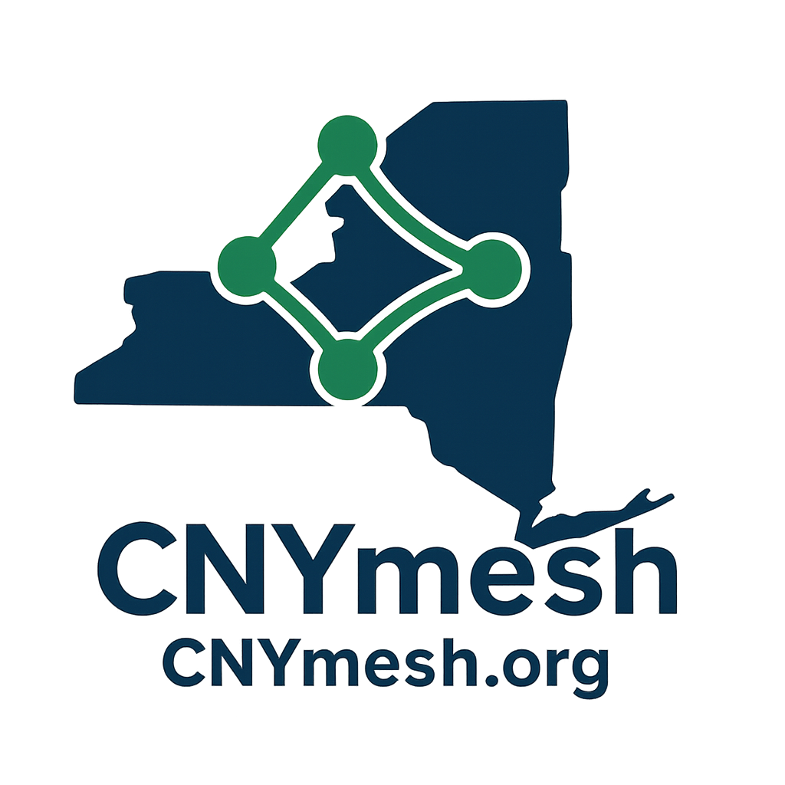

Building a Community-Powered Mesh Network in Central New York

CNYmesh is a community initiative exploring and expanding both Meshtastic and MeshCore across the Syracuse region, with focus on Onondaga, Oswego, Madison, Oneida, Cayuga, and Cortland counties and long-range connections to Rochester, Buffalo, Ithaca, and Albany.
What is CNYmesh?
We are a grassroots group deploying small, low-power LoRa radios to create a decentralized, peer-to-peer mesh that can keep local communication moving when cell and internet are unavailable.
- Build resilient local coverage with fixed and mobile nodes
- Explore both Meshtastic and MeshCore as practical mesh tools
- Run workshops, field tests, and community onboarding
- Coordinate with neighboring cities for a regional backbone
Why both are valuable
- Meshtastic: mature ecosystem, broad hardware/app support
- MeshCore: promising architecture and growing community momentum
- Together: more experimentation, better learning, stronger long-term resilience
How to Join
- Get a device. T-Beam, Heltec V3, and T-Echo are common starters.
- Choose your path. Start with Meshtastic, MeshCore, or both depending on your goals.
- Join the community. Connect in Discord and Facebook for current setup guidance.
- Host or carry a node. Every added node improves local and regional connectivity.
Technical Resources
Dig into frequencies, antennas, node types, and planning guidance for Central New York terrain. We are documenting proven approaches while comparing Meshtastic and MeshCore in real deployments.
Get Involved
- Host a node at your home, business, or high-elevation location
- Help test links and document real-world performance
- Share RF and deployment knowledge
- Join outreach and onboarding for new operators
Follow live progress
Track network growth, current activity, and community updates as deployments evolve.
Contact / Collaborate
Best way to stay current with ongoing Meshtastic and MeshCore efforts is to connect with the community directly. Exploration and network building are active and evolving quickly.
- Email: hello@cnymesh.org
- Discord: Join our Discord server
- Facebook: Join our Facebook group
- API for live data:
https://api.cnymesh.org/